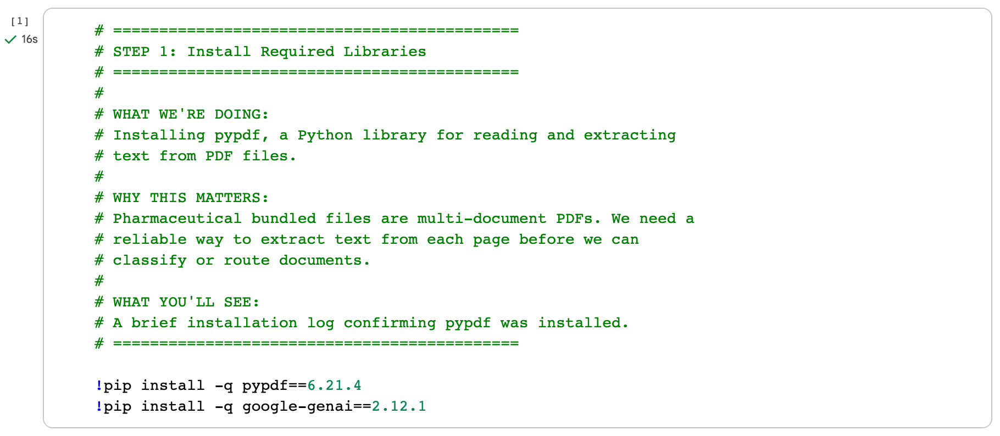
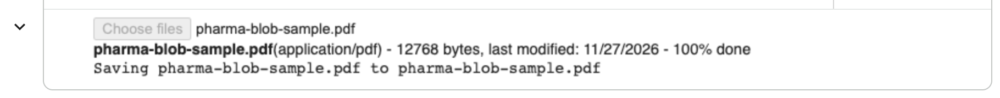
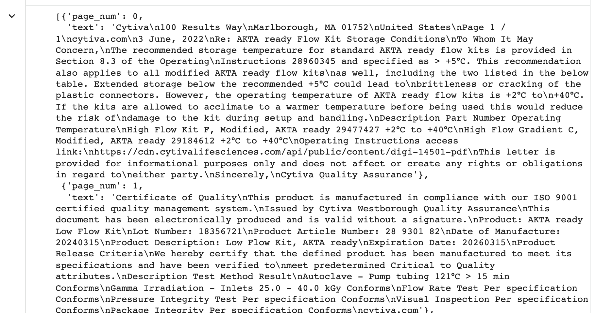
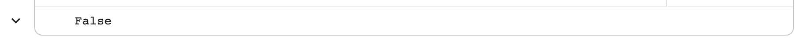
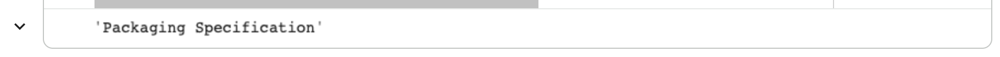
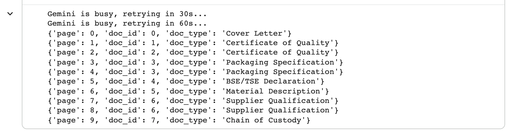
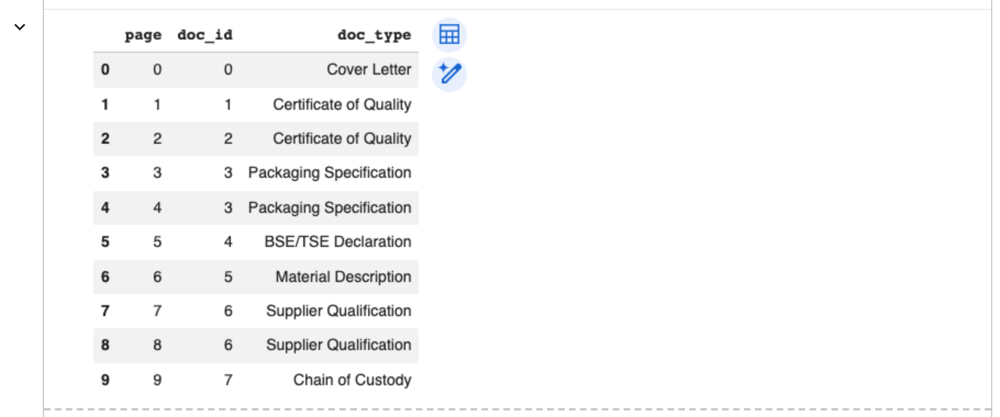
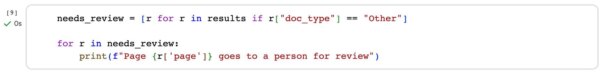

Follow along using this Colab notebook, which includes all the code for building and testing a page-level classifier. You'll also be able to upload your own multi-document PDFs to experiment with real data.
You can also try it out using this sample multi-document PDF. Use it to test document splitting, classification, and routing.
pharma-blob-sample.pdf.GEMINI_API_KEY, as you set it up in Project 5. The notebook reads it from there.The whole notebook takes about 3 minutes to run (140 seconds in our run). Two things can look like a problem, but aren't:
Gemini is busy, retrying in 30s..., then ...60s.... It carries on by itself.If a cell is still running, it hasn't frozen. Wait for the green tick before you run the next cell.
Press Run on the first code cell, under Step 1: Extract Page-Level Content from Pharmaceutical PDF:
# ============================================# STEP 1: Install Required Libraries# ============================================## WHAT WE'RE DOING:# Installing pypdf, a Python library for reading and extracting# text from PDF files.## WHY THIS MATTERS:# Pharmaceutical bundled files are multi-document PDFs. We need a# reliable way to extract text from each page before we can# classify or route documents.## WHAT YOU'LL SEE:# A brief installation log confirming pypdf was installed.# ============================================!pip install -q pypdf==6.21.4!pip install -q google-genai==2.12.1What this code does:
pypdf reads PDF files. google-genai lets your code send prompts to Gemini.==6.21.4 and ==2.12.1 ask for the exact versions tested in Colab in November 2026, so a Colab update can't break the notebook.What you'll see in Colab:

(opens the picture full size in a new tab)No output. The green tick next to the cell means it worked.
Press Run on the cell that starts with # Upload the sample PDF:
# Upload the sample PDF# Click "Choose Files" below and pick pharma-blob-sample.pdf from your computer.# Colab saves it in /content, where the next cell looks for it.from google.colab import filesuploaded = files.upload()pharma-blob-sample.pdf, the file you downloaded on slide 1.What you'll see in Colab:

(opens the picture full size in a new tab)The PDF is now in Colab's /content folder, where the next cell looks for it.
Let's start with the basics: loading your PDF and pulling out the text one page at a time. This step sets the stage for everything else: you can't classify or detect anything unless you know what's on each page. You'll use a Python library called pypdf to do this.
Press Run on the cell with STEP 2: Extract Page-Level Content from PDF in its top comment:
from pypdf import PdfReaderreader = PdfReader("/content/pharma-blob-sample.pdf")pages = [page.extract_text() for page in reader.pages]doc_pages = [{"page_num": i, "text": p} for i, p in enumerate(pages)]doc_pagesLet's break it down:
PdfReader is like a tool that opens up your PDF and lets you peek inside.[something for something in something] syntax, which you met in Project 2). For each page, you extract the text.{ "page_num": 0, "text": "This is page 0 content..." }What you'll see in Colab:

(opens the picture full size in a new tab)A list of 10 dictionaries, one per page. The top shows page 0, the cover letter, and page 1, the first Certificate of Quality. Colab shows the rest in a scroll box under the cell.
doc_pages now holds the text of all 10 pages.
Before your code can ask Gemini anything, the notebook has to connect to it.
Press Run on the cell under Step 2: Set Up Gemini LLM Connection:
from google import genaifrom google.colab import userdataimport timeMODEL = "gemini-3.5-flash-lite"client = genai.Client(api_key=userdata.get('GEMINI_API_KEY'))def gemini_model(prompt, retries=3): for attempt in range(retries): try: response = client.models.generate_content(model=MODEL, contents=prompt) return response.text except Exception as e: busy = any(s in str(e).lower() for s in ["429", "503", "overloaded", "resource_exhausted", "unavailable"]) if busy and attempt < retries - 1: wait = 30 * (attempt + 1) print(f"Gemini is busy, retrying in {wait}s...") time.sleep(wait) else: raiseWhat this code does:
GEMINI_API_KEY from Colab Secrets and connects to the model gemini-3.5-flash-lite.gemini_model(prompt) sends one prompt and returns Gemini's reply as text. If Gemini is busy, it waits 30 seconds, then 60, and tries again.No output. If Colab asks Grant access?, click it.
Now that you have the page content, let's start comparing them! Your next job is to decide: "Does this page belong to the same document as the one before it?" You'll write a function that asks an LLM (like Gemini) to look at the text on two consecutive pages and return Yes or No.
Read the prompt in the next cell first:
def is_same_document(prev_text, curr_text, doc_type=None): prompt = f""" You are checking whether two consecutive pages from a pharmaceutical document package belong to the SAME individual document. A NEW document starts when the page has: - A different document title or heading (e.g., "Certificate of Quality" vs "Packaging Specification" vs "Material Description Sheet") - A completely different topic or subject matter - Its own header with a new document number or reference Pages belong to the SAME document when: - The second page says "continued" or "page 2 of 2" - The content directly continues the previous page's discussion - They share the same document number or title Previous page type: {doc_type or 'unknown'} Previous Page: {prev_text} Current Page: {curr_text} Do these two pages belong to the SAME document? Answer ONLY 'Yes' or 'No'. """Press Run on that cell, with STEP 4: Write Document Boundary Detection Function in its top comment. Its last lines test the function:
response = gemini_model(prompt) return response.strip().lower().startswith("yes")prev_text = doc_pages[1]["text"]curr_text = doc_pages[2]["text"]doc_type = "Certificate of Quality" # Optional, can be "unknown" or Noneis_same_document(prev_text, curr_text, doc_type)Why this matters:
.lower().startswith("yes") turns the model's reply into True or False.
What you'll see in Colab:

(opens the picture full size in a new tab)False: pages 1 and 2 are both Certificates of Quality, but for different lots (18356721 and 15102934), so the model says they're two separate documents.
This function becomes the brain of your boundary detection.
Whenever the model says "This is a new document," we need to figure out what kind of document it is. Is it a Cover Letter? A Certificate of Quality? A Packaging Specification? This next function does that. Read its prompt first:
DOC_TYPES = ["Cover Letter", "Certificate of Quality", "Packaging Specification", "BSE/TSE Declaration", "Material Description", "Supplier Qualification", "Chain of Custody", "Other"]def classify_document_type(text): prompt = f""" You are a pharmaceutical document classifier. Based on the page content below, classify it into ONE of these document types: - Cover Letter: A formal letter (often starting with "To Whom It May Concern") discussing product information or storage conditions. - Certificate of Quality: Contains lot numbers, manufacture dates, expiration dates, and test results (autoclave, gamma irradiation). - Packaging Specification: Describes packaging components, materials, part numbers, and configuration change history. - BSE/TSE Declaration: A declaration about animal-origin materials and transmissible spongiform encephalopathy compliance. - Material Description: Lists materials of construction, sterilization compatibility, and physical properties of a product. - Supplier Qualification: Contains supplier audit history, certifications (ISO 9001, ISO 13485), and approved product lists.Press Run on the cell under Step 3: Write the Document Type Classifier. Its second half sends the prompt and reads Gemini's answer:
- Chain of Custody: Lists manufactured assemblies, traceability information, and the manufacturing-to-shipment flow. - Other: Use ONLY if the content does not match any of the above. Page Content: {text} Respond with ONLY the document type name. No explanation. """ response = gemini_model(prompt).strip().lower().replace(".", "") # Match the answer to one of the 8 labels, spelled exactly as in the list above for label in DOC_TYPES: if label.lower() in response: return label return "Other"classify_document_type(doc_pages[3]["text"])What this code does:
DOC_TYPES and returns it spelled exactly as in the list, so cover letter becomes Cover Letter. If the reply matches none of them, the page gets Other.What you'll see in Colab:

(opens the picture full size in a new tab)Why this matters:
Each document needs a type label so we can apply the correct logic downstream (e.g., route certificates of quality to a compliance reviewer, BSE/TSE declarations to a regulatory verifier, etc.).
One spelling for every label matters too. Later readings filter pages by their exact label, so Certificate of Quality and Certificate Of Quality would count as two different types.
Here comes the fun part: walking through all your pages and using the two functions above to check if a page is part of the same document, assign a document ID and classify the document type, generating a structured metadata list that tracks document boundaries and types.
Press Run on the cell under Step 4: Loop Through Pages and Generate Page-Level Metadata:
results = []current_doc_type = Nonedoc_counter = 0for i, page in enumerate(doc_pages): if i == 0: current_doc_type = classify_document_type(page["text"]) else: prev_text = doc_pages[i - 1]["text"] same = is_same_document(prev_text, page["text"], current_doc_type) if not same: doc_counter += 1 current_doc_type = classify_document_type(page["text"]) results.append({ "page": i, "doc_id": doc_counter, "doc_type": current_doc_type })for r in results: print(r)This cell takes the longest, about 1.5 minutes. If it prints Gemini is busy, retrying in 30s..., let it run.
What you'll see in Colab:

(opens the picture full size in a new tab)What's happening here?
This creates a neat little map of your file: 10 pages, 8 documents (IDs 0 to 7). The two Gemini is busy lines are the waits from slide 2.
Now let's make it easier to read. You'll use pandas to turn your results into a table.
Press Run on the cell under Step 5: Visualize Results:
df = pd.DataFrame(results)dfWhat you'll see in Colab:

(opens the picture full size in a new tab)Why is this helpful? This page-by-page metadata gives your system a detailed understanding of document structure, unlocking smarter routing, more accurate extraction, and scalable automation. With this metadata table, your system can now extract and process each document separately, with confidence.
Here's what the needs review list from the cards looks like with the results list from Step 4.
Press Run on the cell under Step 6: Keep a Human in the Loop:
needs_review = [r for r in results if r["doc_type"] == "Other"]for r in needs_review: print(f"Page {r['page']} goes to a person for review")What you'll see in Colab:

(opens the picture full size in a new tab)This sketch checks only the first rule. The other two follow the same pattern.
Return the Final Output. Export your final classification as a JSON array (one dictionary per page) OR a pandas DataFrame. Your notebook now shows both:
Your rows should look like these.